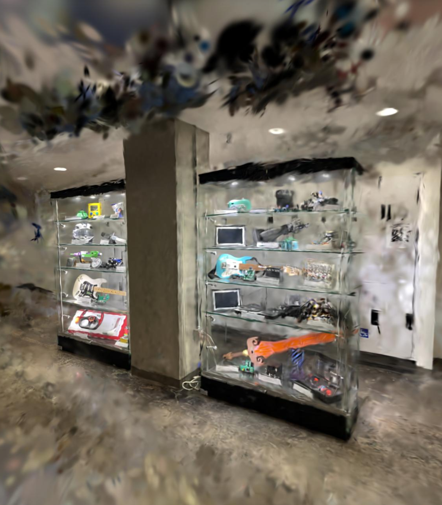

Paint the Canvas: 3D Gaussian Splatting for Scene Reconstruction Robot
”Paint the Canvas,” or PTC, is a reconstruction platform enabling the ability to easily re- construct and interact with 3D scenes at an exceptionally low cost. The primary objective of this platform is to allow users to leverage the use of techniques in novel-view synthesis, such as Neural Radiance Fields (NeRFs), 3D Gaussian Splatting (3DGS), or Sparse Voxel Rasterizers (SVRaster), to generate interactive scenes for capturing memories, performing reconnaissance missions, or aid- ing in rescue operations. Our low-cost solution leverages a custom hardware and software stack that is deployable and adaptable to any autonomous or manual capture rig, such as autonomous vehicles (AVs), humanoids, quadrupeds, and/or quadrotors for customizable autonomous data capture.